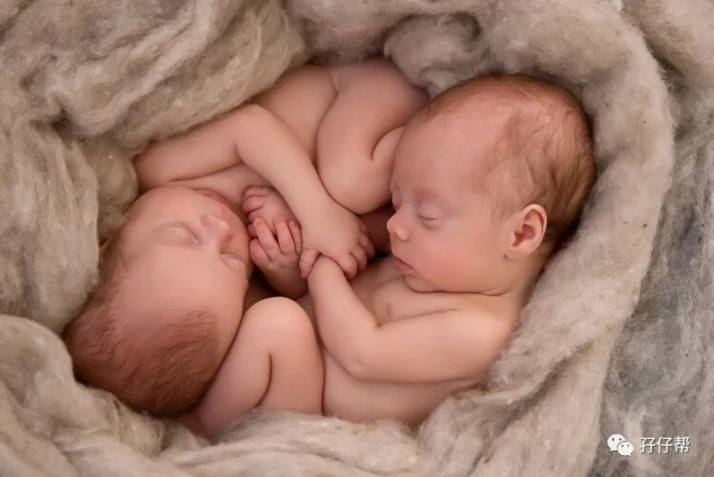
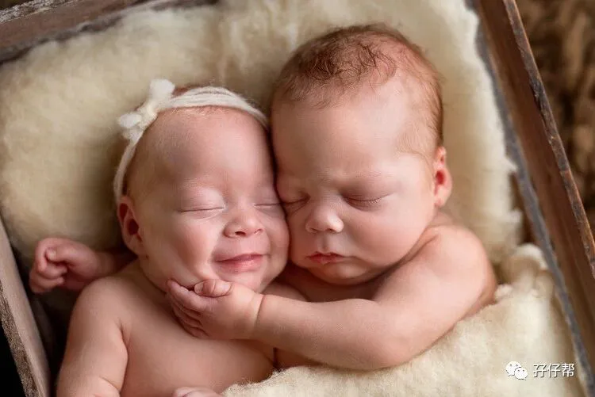
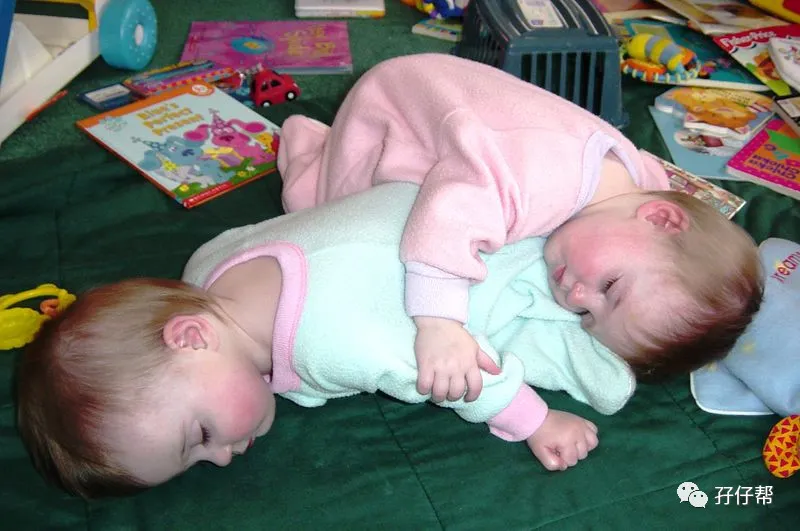

文|圆圈妈，一个文思如尿崩的双胎妈妈
图|来自网络，如有侵权，请联系删除
· 正 · 文 · 来 · 啦 ·
我想，在玩这个事情上，我绝对是个称职的妈妈！
这个时候的崽儿们非常可爱，会做更多的动作，如翻身，坐下，到处爬，偶尔还会跟你耍一些小脾气，当然也会对你扮鬼脸，卖萌…
有时候我急着要给他们换上尿布，抓他们去床上睡，结果反而被萌了一脸！于是跟着一起嗨，甚至比他们还要嗨…
今天的推文主题：
浅谈6月龄--9月龄的双胞胎睡眠特点
以下文字节选自《双胞胎睡眠圣经》
第二部分第五章
不同年龄段儿童对睡眠的不同需求
预产期过后的6～9个月
当双胞胎成长到6-9个月的时候,他们的生物钟系统已经发展成熟。这时父母需要思考的问题就变成了到底该让孩子按照自身的生物钟去作息,还是应该我们选择他们的作息时间。
要提醒你的是,不要期望太高,有时双胞胎的生物钟并不同步。另一个你需要思考的问题听起来比较容易找到答案,就是你要问问自己孩子们的睡眠需求有没有得到满足?
研究表明6-9个月大的孩子一天需要的平均睡眠时间是14~14.5个小时,不过有些孩子可能每天睡得时间更久。
最有效的办法是观察孩子们每天下午4~5点的情绪和行为。如果他们的情绪很好,那说明他们的睡眠需求得到了满足，如果他们表现得很烦躁,那说明他们缺乏足够的睡眠。
孩子们成长到6个月后,他们每天的日间小睡时间应该变长。和以前一样,家长应该更注意孩子们每次开始小睡的时间而不是每次他们睡多久。
一般情况下,宝宝们会有一次晨间小睡和第二次小睡,每次睡眠的时间大约是1~2个小时。在午睡时间达到正常之前,宝宝们可能会在晨间时睡更长的时间。
在这个年龄段, 日间小睡可能会不稳定。不合理的睡觉时间带来的危害会像滚雪球一样越来越大。
经常推迟晨间小睡的时间,会导致孩子整个作息规律的紊乱。错过晨间小睡的宝宝们白天可能不会再睡,或者因为白天太过疲劳晚上睡了很长时间,到了第二天日间又不睡觉,还影响其他兄弟姐妹的正常睡眠。
好消息是通过一些日子的努力,使用一些方法可以使你的双胞胎紊乱的睡眠习惯回到正常模式。好的睡眠习惯也会像滚雪球一样被越来越巩固。
比如,如果你的孩子们晨间小睡的时间提前到了 7: 30~8: 00,那么第二次日间小睡的时间也会提前,可能发生在中午之前。
这样一来,你的孩子可能下午还会睡一觉,但这样就会影响他们晚上早睡的顺利进行。当孩子们在前一天晚上可以早早睡下,那么即使第二天他们早早醒来也不会感到无聊。
而他们晨间小睡的时间会推迟到早上9点左右，这样他们日间的第二次小睡也会随之推迟到中午12点或者下午一点左右，在这种情况下孩子们就不再需要第三次日间小睡。
这样的规律有点像鸡生蛋、蛋孵鸡的情况。总之从我调查的结果和掌握的经验来看,晚上让孩子们早点睡觉是获得高质量睡眠的不二法门。
在孩子6~9个月的时候,很多家长对孩子们晨间小睡的时间要求比较严格,对日间第二次小睡的时间会相对宽松 。
一般家长会安排双胞胎一起晨间小睡,但日间的第一次睡觉的时间会有所不同。当双胞胎中的一个先睡醒的时候,家长会把他抱走,这样剩下的那个宝宝可能继续睡20~ 40分钟。如果剩下的那个宝宝过了40分钟还没有醒的话,大部分家长表示他们会叫醒他,以保证两个宝宝可以达到几乎同步的作息规律。
尤其是异卵双胞胎,他们对睡眠会有不同的需求。让其中一个嗜睡的宝宝多睡一会既可以满足他的睡眠需求,又保证了他的睡眠质量。与此同时,这样的时间差也为另一个瞌睡较少的孩子提供了珍贵的与父母独处的时间。对于父母来说,在这段时间只用照顾一个孩子也会觉得相对轻松一些。
孩子成长到6~9个月这段时期经常会出现一些睡眠问题,因为从这时开始孩子们的自我意识开始觉醒。这表示他们开始有自己的想法、意愿,并且固执地做他们想做的事情。
比如当孩子想玩玩具卡车,而你想给他换尿布时,你很难让他乖乖地配合你。如果孩子们想要和你多玩一会而不愿意睡觉的时候,他们会努力让自己晚点睡着以享受你的陪伴。
尽管他们的自主能动意识逐渐增强,但是家长的做法可以左右他们对睡觉的选择。家长的行为态度决定孩子的行为态度。
如果在孩子准备睡前,家长用平静、安抚性的缓慢节奏跟他们做一些游戏,会让他们安安静静地睡去。
如果在孩子准备睡觉前家长陪他们玩大喊大叫的游戏使他们过于兴奋,孩子怎么可能愿意马上去睡觉?
所以请家长们好好想想,当你的孩子不愿意按时睡觉的时候,是否是因为你的行为导致的呢?
个人拙见
马克在这个章节提到的观点，简直不能太同意！根据我的经历，提炼出一些睡眠建议，供大家参考。
①同步化不是绝对的分秒不差
同卵双胞胎圆圈兄弟两人的差异性，很早就有端倪了，比如睡眠时间。
圆圆一直都比圈圈睡的多，圈圈睡一个小时，他会睡一个半小时，有时候圆圆早早睡下，圈圈依然玩得意犹未尽。
那时候的我们对同步化训练还没有概念，只是按照正常人的思维觉得，如果把正在熟睡的娃特意叫醒非常“坑娃”，或者是硬逼这一个玩心大起的娃秒睡，显然是活受罪！
只要他们的睡眠时间差不超过1个小时，问题都不大。
每个人的睡眠因子都不一样，双胞胎也不例外，没有必要强求必须严格一致。
若执意要求分秒不差，可能会打破他们好不容易培养起来的睡眠机制，反而适得其反哦！
正好，跟先睡醒的那个娃独处下，体验下带一个娃的感觉，真的是有对比才有伤害。
带一个娃与同时带两个娃完全是一个天堂，一个地狱的区别！
②来点睡眠仪式
上一期推文中，有妈妈留言说到一岁双胞胎相互干扰很严重，很困却不肯睡，挨着床就四处乱窜，怎么破？
说来惭愧，圆圈目前4岁了，依然有这种坏习惯，床在他们眼里不是睡觉的地方，而是蹦床一样可以跳来跳去的游乐场。
看到马克在这个章节的观点，我发现这一切可能真的是我们家长们的态度问题，双胞胎的相互干扰不能背这个黑锅。
转变态度，从睡眠仪式开始。
睡前仪式即宝宝的睡前流程，父母做的一系列睡眠引导，帮助宝宝形成一定规律，建立睡觉的条件反射，能让宝宝知道自己接下来要做什么，久而久之，形成一种习惯。
比如睡前陪他们读下绘本，用平静安抚性的缓慢节奏跟他们做一些游戏，营造一个让人昏昏欲睡的环境，灯调暗点，拉上窗帘，适宜温度，再来点轻柔的音乐或者睡前故事。
③“日间小睡”不容小觑
有时婆婆会故意不让圆圈兄弟白天小睡，说白天睡多了，晚上就不睡了。
实际上呢？因错过了晨间小睡或者午间小睡，他们总是在接近傍晚那会儿，情绪异常烦躁，特别哭闹，太过疲劳的他们，想睡又睡不着，只好哭…
于是，在本应煮饭菜和吃晚餐的时间，我们哄娃去了，晚饭和夜宵一起吃，是常有的事！
可见，日间小睡万不可轻视，更不要错误地觉得白天少睡，晚上才能睡得好。
须知道，白天的睡眠和晚上的睡眠是截然不同的哪怕宝宝们可以从时间上1:1地补回来,但在睡眠效果上是毫无意义的！
因此，哪怕只安排一次小睡，总好过让他们累到极致，给你来一段黄昏闹！
天晓得，两个四角吞金兽一起黄昏闹，那滋味得有多么让人瑟瑟发抖！
-END-
一好文推荐一
一加入社群一
一关注孖仔帮一
点击“阅读原文”，直达双胞胎育儿网站www.sgguy.com.
喜欢这个睡眠圣经吗？，请点“在看”


